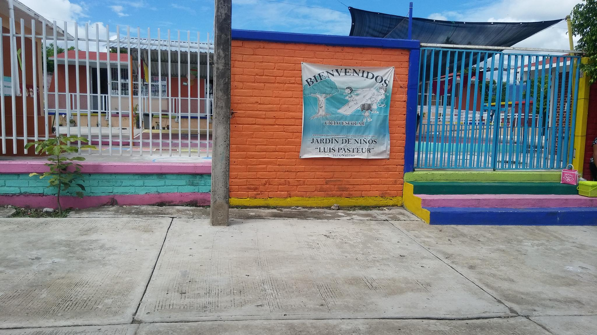

¡B I E N V E N I D O S!
¡INGRESA CON NOSOTROS!
Jardin De Niños Luis Pasteur
C.C.T. 12DJN3578O
ZONA:100
SECTOR:09
NOTA:Si quieres que tu hijo sea parte de nosotros ve a la opcion Pre-Inscripcion ingresa los datos y con gusto tendremos un lugar para el o ella.
NO OLVIDES ACUDIR AL JARDIN, CON LOS SIGUIENTES DOCUMENTOS:
NO OLVIDES ACUDIR AL JARDIN, CON LOS SIGUIENTES DOCUMENTOS:
°ACTA DE NACIMIENTO ORIGINAL Y 2 COPIAS
°CURP AMPLIADA AL 200% ORIGINAL Y 2 COPIAS
°CARTILLA DE VACUNACION 2 COPIAS
¡¡¡VISITANOS!!!
.
Nos Ubicamos.
Municipio: Cocula, Guerrero Calle: M. Abasolo #7 Ref. Entre: Calle Matamoros, Calle M. Escobedo Código Postal: 40580 Localidad, Barrio: Cocula, San Bartolo Alto.